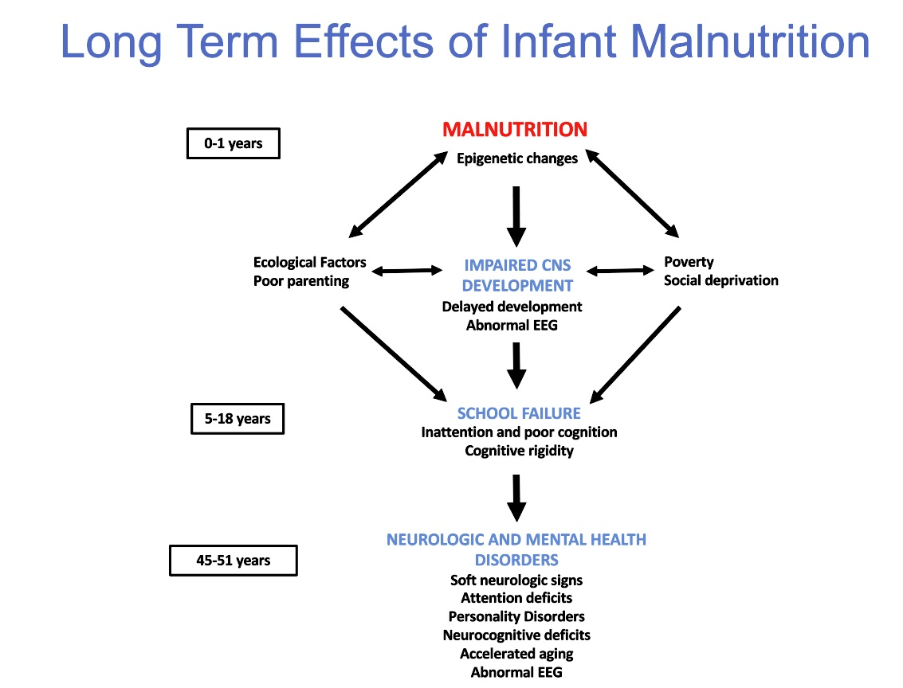

Overview


This multinational project aims to study the long-term effects of early malnutrition in the life of people who suffered it.
The BNS is a 45-years longitudinal study which has compiled follow up information of a group of Barbadian children who suffered Protein energy malnutrition (PEM) during their first year of life. 45 years after this group of persons show signs of early aging and cognitive decline, as well as other psychological and physiological sequalae. Novel statistical mediation methodology is being used to describe the role of the metabolic, nutritional, economical, psychological, brain electrical activity and all existing information, combined to produce these alterations of the normal development.
The purpose is inviting other researchers to contribute with their own methodologies and multimodal analysis to better describe and understand this phenomenon. At the same time, inviting other groups who can bring into the study data from other populations which could provide better understanding of the situation and provide further confirmation.
Being still at the present malnutrition a worldwide problem even in the developed countries, the outcome of this study is to produce evidence about the persistent negative effects of the early malnutrition in the life of the persons, which could support the international organizations to create consciousness in the governments about the importance of this problem and to create policies to fight against it.
Select Publications
- Quantitative EEG Tomography of Early Childhood Malnutrition. Front. Neurosci., 28 August 2018 | https://doi.org/10.3389/fnins.2018.00595
- An Age-Adjusted EEG Source Classifier Accurately Detects School-Aged Barbadian Children That Had Protein Energy Malnutrition in the First Year of Life. Frontiers in Neuroscience.